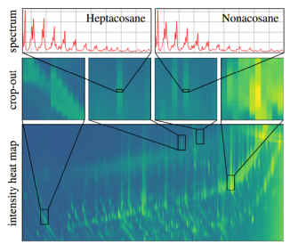
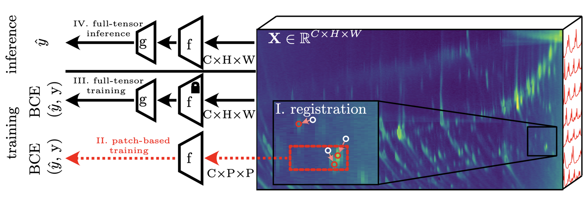

Jan Hlavsa
MSc student in Artificial Intelligence·Computer Vision Researcher·CTU Prague
I am a master's student in Artificial Intelligence at the Faculty of Electrical Engineering, CTU in Prague, and a research intern in the Visual Recognition Group, working with Prof. Jiří Matas and Dr. Radim Špetlík.
Pose graphs. I work on pose graph initialization and optimization. The project started during my Student Summer Research Fellowship in the Computer Vision and Geometry Group at ETH Zurich and continues at CTU in close collaboration with Dr. Daniel Barath and Dr. Zuria Bauer.
Human scent. Together with analytical chemists, I work on recognising people from the chemistry of their scent, treating raw GC×GC-TOFMS measurements as multi-channel images and training on terabytes of data on the LUMI supercomputer.
Publications
-
Identity Verification from Human Scent using Learned Representations of Two-Dimensional Gas Chromatography–Mass Spectrometry Data
Submitted to Machine Vision and Applications (MVA), Springer
-

Identity Verification from Human Scent using Channel Representation of 2D Gas Chromatography-Mass Spectrometry Data
IEEE/CVF Winter Conference on Applications of Computer Vision (WACV), 2026, pp. 1471–1480
Raw GC×GC-TOFMS measurements become multi-channel images by compressing each local mass spectrum into a few learned channels; metric embeddings on top verify identity from scent. On 252 individuals (2,528 samples, ~7.5 TB), the best method reaches ≈53% TPR at 5% FPR without explicit spatial registration.
@inproceedings{Spetlik2026ScentID, title = {Identity Verification from Human Scent using Channel Representation of 2D Gas Chromatography-Mass Spectrometry Data}, author = {Spetlik, Radim and Hlavsa, Jan and \v{C}echov\'{a}, Jana and Pojmanov\'{a}, Petra and Matas, Ji\v{r}\'{\i} and Urban, \v{S}t\v{e}p\'{a}n}, booktitle = {Proceedings of the IEEE/CVF Winter Conference on Applications of Computer Vision (WACV)}, pages = {1471--1480}, year = {2026}, doi = {10.1109/WACV61042.2026.00149} } -

Sex Classification from Human Scent Using Image Interpretation of 2D Gas Chromatography-Mass Spectrometry Data
Scandinavian Conference on Image Analysis (SCIA), Reykjavík, 2025 · LNCS, Springer, pp. 457–470
Raw GC×GC-TOFMS data are interpreted as images: chromatograms are registered to a canonical frame and CNNs learn from the full spectral data instead of hand-picked compounds, reaching ≈88% identity-aware cross-validation accuracy on a new dataset of 504 samples from 40 individuals.
@inproceedings{Hlavsa2025ScentSex, title = {Sex Classification from Human Scent Using Image Interpretation of 2D Gas Chromatography-Mass Spectrometry Data}, author = {Hlavsa, Jan and Spetlik, Radim and \v{C}echov\'{a}, Jana and Pojmanov\'{a}, Petra and Matas, Ji\v{r}\'{\i} and Urban, \v{S}t\v{e}p\'{a}n}, booktitle = {Image Analysis (SCIA 2025)}, series = {Lecture Notes in Computer Science}, publisher = {Springer Nature Switzerland}, pages = {457--470}, year = {2025}, doi = {10.1007/978-3-031-95911-0_32} } -
Computer Vision Methods for Sex Classification and Identity Verification Using Two-Dimensional Gas Chromatography Mass Spectrometry Data
Faculty of Electrical Engineering, Czech Technical University in Prague
Research & Experience
-
Jul – Aug 2026
Student Summer Research Fellow (SSRF)
ETH Zurich · Computer Vision and Geometry Group · Zurich, Switzerland
- 20 fellows from 2,500+ applicants
- Ongoing remote collaboration
Research project: Improving Global-Aware Edge Prioritization for Pose Graph Initialization through (k, ℓ)-Sparse Graphs.
Group head: Prof. Marc Pollefeys · Supervisors: Dr. Daniel Barath, Dr. Zuria Bauer
-
2023 – present
Research Intern
Visual Recognition Group, FEE CTU · Prague, Czech Republic
Computer vision and data science research on two topics:
- Human scent — deep learning on GC×GC-TOFMS data, together with chemists from UCT Prague, with large-scale training on the LUMI supercomputer.
- Pose graphs — pose graph optimization in close collaboration with Prof. Jiří Matas and Dr. Daniel Barath & Dr. Zuria Bauer (ETH Zurich).
Supervisors: Prof. Jiří Matas, Dr. Radim Špetlík
-
2026 – present
Teaching Assistant — Optimization
Department of Cybernetics, FEE CTU · Prague, Czech Republic
Tutorials in Summer Semester 2025/26 and Winter Semester 2026/27, supervised by Doc. Tomáš Werner.
-
2025 – present
Teaching Assistant — Deep Learning Essentials
Department of Cybernetics, FEE CTU · Prague, Czech Republic
Tutorials on deep learning and convolutional neural networks (Winter Semesters 2025/26 and 2026/27), supervised by Doc. Karel Zimmermann.
-
2026 – present
Academic Senator
Academic Senate of FEE CTU · Prague, Czech Republic
Elected student representative in the Academic Senate of the Faculty of Electrical Engineering.
Awards
-
Rakathon 2025 — Main Jury Prize
April 2025Won the main jury prize with team Pixel Predators at Rakathon, which presents itself as the world's largest AI hackathon against cancer. The 2025 edition took place at the Second Faculty of Medicine, Charles University.
Our project RadioProtect makes radiotherapy safer: it finds a 3D transformation between a patient's planning and control CT scans, recovering the positioning correction and flagging unexpected changes in irradiated structures.
Team: Jan Hlavsa (CTU Prague), Filip Oliver Klimoszek (ETH Zurich), David Korčák (ETH Zurich), Barbora Čurdová (UCT Prague)
-
Dean's Award for an Outstanding Bachelor's Thesis
2025Awarded by the Dean of FEE CTU for my bachelor's thesis on sex classification and identity verification from GC×GC-TOFMS data of human scent.
Talks, Conferences & Schools
-
Mar 2026
Oral & poster presentation — WACV 2026
IEEE/CVF Winter Conference on Applications of Computer Vision · Tucson, Arizona, USA
Presented our research on identity verification from GC×GC-TOFMS data of human scent.
-
Jun 2025
Poster — SCIA 2025
Scandinavian Conference on Image Analysis · Reykjavík, Iceland
Poster on sex classification from human scent.
-
2025
Speaker — Multidimensional Chromatography Workshop (MDCW 2025)
MDCW · Liège, Belgium
Sex and person identity recognition from GC×GC analysis of scent samples — a short talk on applying computer vision methods to GC×GC-TOFMS data.

-
2024
Participant — Vision and Sports Summer School
Organised by Vittorio Ferrari (Synthesia), Ondřej Chum and Jiří Matas (CTU Prague)


Education
-
2025 – 2027 (exp.)
Ing. (MSc) in Open Informatics — Artificial Intelligence
Faculty of Electrical Engineering, CTU Prague
-
2022 – 2025
Bc. (BSc) in Open Informatics — Artificial Intelligence
Faculty of Electrical Engineering, CTU Prague
Graduated with a weighted grade average of 1.0 (the best possible). Thesis awarded the Dean's Award.
-
2024 – 2025
prg.ai Minor
prg.ai · CTU Prague & Charles University
Completed the prg.ai Minor, an interuniversity AI programme run by prg.ai that combines the best computer science and AI courses of CTU and Charles University.
-
2014 – 2022
High School Diploma
Gymnázium Jana Palacha · Mělník, Czech Republic
Skills & More
Programming
Machine learning
Tools
Languages
- Czech
- Native
- English
- Fluent
- French
- Intermediate
Memberships
Upsilon Pi Epsilon (UPE) Honor Society
Outside research
Saxophone · Taekwondo
Contact
Feel free to reach out about research, collaborations or anything related to computer vision and machine learning.
hlavsja3@fel.cvut.cz